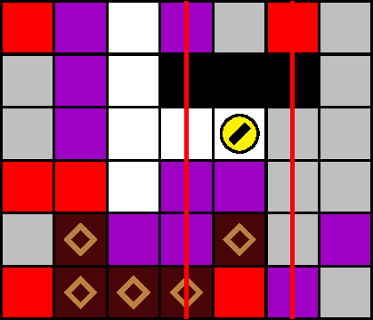
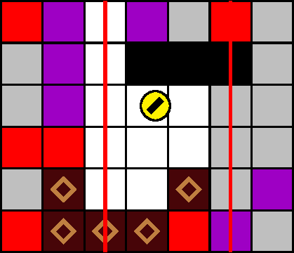

一般指針
愚形・挟み撃ち（縦レーザー）


指針
縦レーザーステージにおいては，横移動するごとに，壁やブロックに向かって横入力することで，水平位置を厳密に整数に調整します．
解説
縦レーザーステージ（400 m型と 1100 m型）では， 2 本の縦レーザーがちょうど 1 列を跨いで予告されることがあります（図 3.4.8.1）． レーザーの判定は幅をちょうど 1 マスもつため，犬はレーザーの間に位置するとき，整数の水平位置から僅かにでも左または右にはみ出ると照射されます．縦レーザーの予告に挟まれた場合は，必要ならば潜行を伴うことで，犬の側面に壁または有色ブロック \(b\) を用意し， \(b\) が位置する方向へ横入力することで，水平位置を整数に調整します．図 3.4.8.1 の場合は，（吸引を伴わない）右入力により位置を調整できます．
特に 400 m型において，縦レーザーの予告に挟まれた後，レーザーが照射される前に予告線から 1.5 マス以上横移動することで，精度を要求されることなく照射を回避することもできます．
注意: 2 列を跨いで予告された 2 本の縦レーザーの予告線に挟まれた場合も，水平位置を整数に調整するか，それが危険ならば予告線からの退避後潜行せずに待機するべきです．非整数の水平位置のまま直下のブロックを吸引し下方へ潜行すると，経路側面に残置されたブロックによるノックバックを受け，予告されたレーザーに照射される恐れがあります．例えば，図 3.4.8.2 において犬が潜行を始めると，右下の塊からのノックバックを受けて， −1 列に予告されたレーザーの照射判定に当たってしまいます（犬の水平位置が非整数であることに注意します）．「愚形・ノックバック（縦レーザー）」も参照してください．
以上の手段は，挟み撃ちを受けていない状況でも一般的に適用できます．詳細は「定跡・レーザー回避」を参照してください．